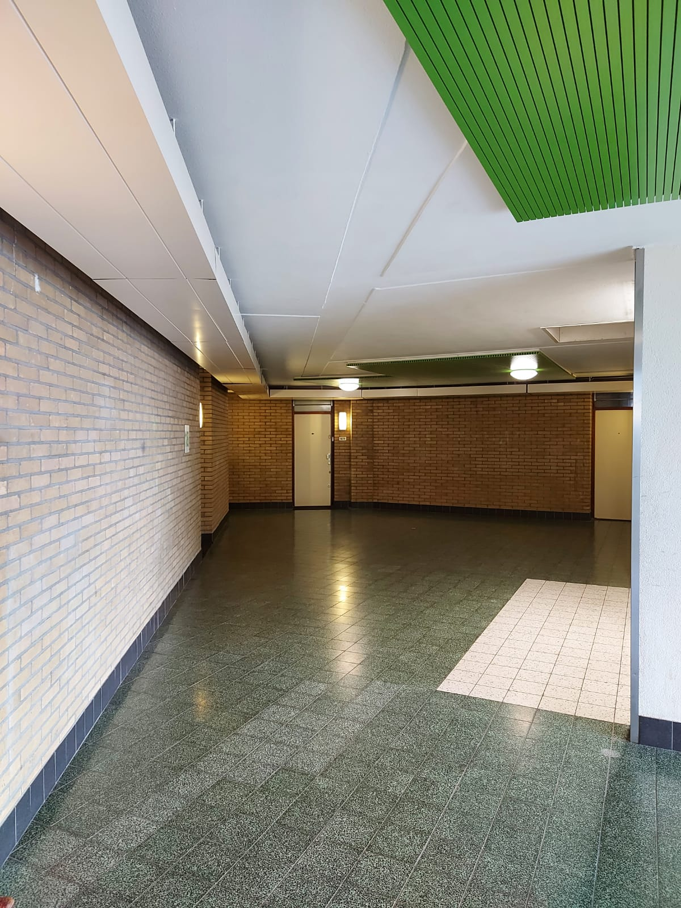

Klieverink Balconies
KLIEVERINK
Bits of history
“Klieverink” is one of the 4 towers in Bijlmer that are part of the original plan for the district. The construction has been completed in 1970. The building is situated in a neighborhood called K-buurt and together with a shopping center and metro station the area is better known as “Kraaiennest”. In 2007 the towers Kralenbeek, Kempering, Klieverink, Kouwenoord were renovated to fit the new vision for the K-Buurt. Main changes included renovation of the facade finishing by covering it with aluminum plates. Additionally, the entrances of each building were made bigger and brighter in color to appear more inviting from urban spaces.
Klieverink and monumentality
There has been a discussion around the extent to which the preserved buildings in the neighborhood should be protected. When talking about the towers it is difficult to imagine that one of them could be gone due to some new development plans. And although no such plans are there in place, the recognition of the building as a ‘monument’ could secure its presence for the future. The idea of Klieverink being granted such status of a monument is a good example of problematic aspects of positioning the Modernistic heritage in very classically understood frames and set of rules of monumentality. The essay analyzing the case was written and a lot of arguments and ways of thought were presented, however, as rich as the literature review and research was, we realized that the analysis missed an ‘inhabitants factor’. When analyzing the buildings such as Klieverink and their surroundings it is crucial to underline the value of community and people's opinions on that matter. The truth is that the conversation about Klieverink being a monument came from a kind of bottom-up approach where people want to protect the history and significant heritage of the district. It seemed crucial to ask people themselves how does it feel to live in the district and in the building in particular and what they think about it in terms of social problems, values, architecture, location, history. We needed to compare our findings with what people think, as well as visit the location and grasp a feeling of the neighborhood.
Community Centre
Literature and history vs personal experience and reality
The literature and historical research was crucial at the beginning but it was important
that as a group we try to understand the reality more personally. On one of the cloudy afternoon we traveled to
Bijlmer. The district was indeed far from the center of Amsterdam and at first, it seemed a bit desolated,
however when passing high buildings, or the stadium one could still feel that the city was not yet left behind.
When walking around the district we realized that indeed the buildings are rather far apart from one another and
the in-between spaces leave out green but it is not always taken care of. This all creates the feeling that the
human scale is missing somewhere. Moreover, being there for the first time it is quite surprising that at times
it is difficult to find the way with the bike and not end up at some rather busier car road, which normally is
not confusing in other districts. However, this is probably the issue only when one arrives there for the first
time.
The feeling of the space created by honeycomb high structures with green areas in between appeared to be way
different than expected and not comparable with any other place in Amsterdam. Meandering under the tall
structure into the open space and then again under the building and again out, suddenly realizing that there is
a giant train viaduct going just in front is quite different to what one could be used to in the Netherlands.
During the day the district seems green, calm, and interesting rather than like a dangerous neighborhood, as it
is usually described. However, the fact that most of the housing starts from the first floor and that there are
rather dark passes in between the buildings might give an impression that in the evening you might not feel so
safe.
It could be seen that there is a lot of ethnic diversity in the district, however, the cultural backgrounds are
those of rather not white origins. What’s more, the bad reputation of the neighborhood might enhance the
prejudice of people entering the district for the first time. They might expect certain conditions or be too
much opinionated and reserved. For example, it used to be said that the district used to be like a ghetto.
Although it is not said to be like that any more many people might still be automatically judgmental when coming
and seeing people from certain origins just because so many things we're told in the past and are kind or
inherited in the narrative of the district. Hopefully, this will continue to change with upcoming years and it
will be more underlined that Bijlmer is improving rather than that it used to be bad.
Community Centre
After walking around the district we headed to the community center that is right next to the analyzed building. When entering it was quite surprising that actually few things were happening there at the same time. A few elderly men were chatting at the table and having a coffee. There were sewing workshops in one room and almost all of the machines were taken. And then there was always somebody going in and out. We started the conversation with a person at the desk and got the idea that the community center here is a lively spot, with a lot of happenings, gathering people that want to do something together or improve certain things. It was mentioned that the week before there was a BBQ for people from Klieverink building and that many people came to have a chat.

Photo of the district or community center.
Interview 1
Do you have the feeling that the Kraaiennest has changed in recent years?
Well, there will be a very large park above the a9 anyway. The tunnel has already been completed and the cars can already pass through it. In addition, a lot of new residential areas are being built in south-east Amsterdam. Behind this community center they have turned the old flat into handy apartments. So you see, things do not change just a little but very drastically. Despite the violence, it is a child-friendly and pleasant neighborhood. I guess every neighborhood has its flaws. For example, many people come to this community center for activities. Here they take Dutch classes, yoga, knitting and sewing, among other things. There are also many local residents who organize activities here themselves, such as the heart for the K-buurt. It's a really nice neighborhood. With the Arena Boulevard it is almost a city within a city.
Will urban renewal not come at the expense of the people who live here now?
Of course. We recently had a meeting here with local residents who complain that houses are no longer affordable. They then have to leave for Zaandam and Assendelft because the houses are cheaper there. The yuppies will come this way. But fortunately there are also plenty of people who have bought a house here in the past.
Are there more community centers such as the Bonte Kraai in this area?
De Bonte Kraai is the only community center in this district, but our organization has five community centers spread across the Bijlmer. We got one for each neighborhood.
Could you tell us a little more about what Hart voor de K-buurt does exactly?
Hart voor de K-buurt is a neighborhood organization here in Kraaiennest that stands up for the interests of local residents. Mike, coordinator of Hart voor de K-buurt can tell you a lot more about this. For example, they are in contact with the municipality about what is going to happen in the neighbourhood; whether they have plans or not. Mike is much more involved than we are actually. As an employee of this community center I do, of course, talk to a lot of people, but I don't know exactly what is going on in terms of content.
Are many people closely involved in the neighbourhood? How do local residents feel about any changes?
I wouldn't say that people are very attached to the buildings around here. People are attached to their own homes. They like it here. Many people will therefore have a negative attitude towards the demolition of the buildings because consequently people will need to leave to live elsewhere. They won't come back. So I think they're mostly afraid to change, because as a result they might lose their own space. Some people were also born here in the south-east and they just don't want to leave. I understand that very well.
If the community could change anything, what would it be?
I don't think the community would want to change much apart from the violence. A lot has changed and things are going really well.
How did you come to work here?
A cousin of mine worked here and I actually worked in a company. I worked for the technical department for fifteen years, but unfortunately the company went bankrupt and I had to look for a new job. That's how I came to work here. It's a whole different world here and you really are among the people. I really like that. I've been working here for six years now and I'm still enjoying myself. We can't all be directors. People have a good relationship with me. I am a familiar face. Not everyone is free to talk to someone else, but when I'm here we can always have a conversation.

View from the building - 18th floor.
Interview 2
What do you think of the Klieverink building?
It’s a great flat and I love my apartment! It is always clean and there is a mutual understanding. The neighbors always greet each other kindly. People all know each other because most people have been living there for a long time. In the long run it becomes a family and we also take care of each other. I know nearly three quarters of the people who live there.
Do you happen to know if there are any renovations on the agenda in the near future?
We regularly have work when needed but I don't think there are any major renovations on the agenda right now.
Do you feel at home in the neighbourhood?
It's a good neighborhood. There is occasional violence, but I guess street violence is a broader societal issue right? Even in neat places such as Bloemendaal and Apeldoorn they had problems regarding violence. Fact is though, there are many nationalities here. Let alone in Kraaiennest; if you ask random strangers where they come from, you’ll find there are people from all over the world. Not everyone knows exactly where the other comes from. I once told someone that I’m from Suriname and this man thought Suriname was some country in Africa. But despite the fact that everyone has a different background, we get along well. For example, two weeks ago we had a barbecue at the Klieverink flat. There were Poles, Moroccans and Surinamese, but everyone takes care of one another. I had bought meat at the mall so the Moroccans know that it has been ritually slaughtered. This way everyone can have a bite. I don't find it hard at all to adapt to the cultural differences. If my Polish neighbors want to party, I let them party. We even have our own group chat from the Klieverink flat in which we keep each other informed if, for example, an unknown person is in the hallway.
For what reason did you come to the community center this afternoon? Will you be participating in one of the activities?
We have the Crow's Bundle, which is a men's group that we meet on Monday, Wednesday and Friday. We make it fun! Now I just popped in to see how everyone is.
What do you think of the changes in the neighbourhood?
All kinds of people are now moving here from far outside Amsterdam. The houses behind this community center were handy houses and naturally attracted many yuppies. These yuppies also organize barbecues and we even receive their invitation via Hart voor de K-buurt. In addition, they sometimes come to eat in the Bonte Kraai.
In another part of the building, there was some social help happening with people coming chatting and picking up things. There we found our second interviewee.
Interview 3
Do you happen to live in the Klieverink building?
No, the Klieverink building is full of social housing.Half the inhabitants never get out. Look at all the bikes that are stalled on the balconies. All sorts of people are living there. In that other Kempering flat many elderly people live. They even had their own dining room and supermarket over there. These elderly people organized the shop themselves, but unfortunately they’d to close it and now they’ve to go to the local supermarket for their groceries; all because of this studpid prick Mark Rutte, our prime minister, who cut down most of the subsidies for local neighborhood initiatives. That's why I'm volunteering at the food bank as of now.
What’s your opinion on the current mayor of Amsterdam?
Oh she can fuck off as well!You see, I’ve been a youth worker in Bijlmer for ten years; I used to work in Gein at the time. While doing this work you start noticing a lot of money from the municipality ends up in the wrong places. For example; a lot of single mothers come here to the food bank. They don't have any money, but every year they give birth to a new baby. They bear children in order to receive child allowance. Often the father is not entirely out of touch, because those girls regularly just have a lath relationship. However, if the father is registered, he must also pay child alimentation which would be at the expense of child allowance.
Halsema sends all kinds of authorities into the neighborhood to provide information on the topic, but these authorities better act up and do something about these constructions. There are far too many authorities in the Netherlands that have no idea what is really going on. They can write policies whatever they want, but they will also have to act on it at some point.
In addition, you should eradicate subletting in the Bijlmer. If you did, half of the Bijlmer would be empty. Just look at the supermarkets around here. There are signs all over the place with rooms for rent. Some immigrants are allowed to participate in family reunification and have been allocated a family home here. Subsequently, these immigrants send their family back home and sublet their apartments to third parties . After all, he suddenly has three rooms available for renting. Do the math: three times five hundred per month plus all kinds of allowances. With this money they can support their families back home and even guarantee them a royal lifestyle. I really don't want to be racist, but those kinds of constructions should not be allowed…
Do you think architecture can positively change the neighborhood?
Listen, they've destroyed enough here already, haven't they. There used to be a lot of homeless people in the parking garage who missbehaved themselves and thereafter bothered the inhabitants . They decided to demolish the garage completely, but that did not solve the problem. The homeless just relocated to various other locations in this neighbourhood.
Honestly I don’t see any further renovations take place either. This neighbourhood is older than, for example, Rijgersbos. It’s architecture is not sustainable. In the near future all of these buildings will need to meet the sustainability requirements. Taking in consideration almost all of those buildings are ascertained to be label E, refurbishing these buildings to current standards will be a hell of a job. Besides, it would cost too much money. I guess, for now the facades of the buildings look fine to me. I do find it annoying though most of the balconies are stashed with trash and bikes that will never get off. The same goes for the streets. It is full of bicycles here, but out of 20 bicycles, 15 have a flat tire. They just neglect to repair the bikes and so these same old bikes pollute the public space for over 10 years.
Do you happen to know when the last major refurbishment was?
Listen, these flats were built simultaneously with the rest of the Bijlmer. It was said to be a new residential area for the citizens of Amsterdam, but they were talking bullshit. As Indonesia was on the break of independence in 1956 the municipality decided in a hurry to build Slotermeer. As for the Bijlmer, they knew that Suriname wanted to become independent and thereafter an estimated 300.000 immigrants would come this way. Spreading them across the country never occurred as a feasible solution, because you can’t ask these people to give up on their family, friends and community. So the majority of the immigrants ended up living in the Bijlmer. Therefore one could, with all due respect, designate the Bijlmer as ‘ little Suriname’.
DWhat are your thoughts on the new developments in this area?
As you’ve probably heard right now, they tunneled a huge part of the highway and constructed a park on top of it. The houses standing close to the exhaust of the highway are now overloaded with the fumes. But that put aside, a tunnel should never have been a top priority here. In the past I asked the municipality to refund a weekend trip for some kids from the neighbourhood. I didn't get the money as the municipality prioritized other things. These kids were in deep shit because of all kinds of domestic problems, but apparently the municipality thinks only white kids got these kinds of problems. You see what I’m trying to tell you? Money is spent on the wrong things. You have to invest in the community, before investing in beautifying the neighborhood.
Corridor leading to the appartments.
Interview 2
We decided to go near the building and get in, to see how it feels and possibly find some
people that could talk to us at the first glance the building has quite a spacious entrance and after the
renovation, it became much more transparent. What was peculiar from the very beginning was the numbering on the
post boxes, and then as we saw it, at every door. We were advised by some of the people we talked to in the
building, to go the whole way up and appreciate the view. Indeed it was quite amazing and as the building is
really tall it is quite special for Amsterdam to see this much green landscape. The issue that we discovered
when
appreciating the view, was that apparently there is still a problem with people sleeping at the staircases near
to
the common balconies. There are also problems with people defecating those places, which is pretty horrible. We understood that not only because of the smell but also because of the angry notes that were left on the doors.
Besides this problem, the building is not cluttered and is kept clean. On the clean ground floor in the glass
cabinet, there was not much information left for people. However, it was a bit alarming to see a portrait of a
police officer. This officer was said to be in charge of incidents happening in the surrounding.
While walking in, up and down the building we had an opportunity to have some quick chats with people we passed
by. They were very open and friendly. Also, the diversity of people here seems to be even broader, with diverse
origins, Dutch, Surinamese, African, Indonesian, Indian, and also some European countries as we heard. In
general,
it seems that indeed there is a kind of closer relationship between the neighbors. In the elevator, the woman
with
two children was chatting with an elderly man when we were going up, and then again while taking the elevator
down
there was a middle-aged woman and a young guy and they were quite chatty while helping us to pick the correct
floor to get down, as apparently after the renovation it is not that obvious. Even in such a short experience we could observe that people know one another and have a friendly relationship.
Some people we interviewed for longer told us a bit more about the situation in the building.
Interview 4
How do you like your home?
Very good. It is clean and you have a nice view. We have no problems. We live in a three-room apartment, but there are also smaller houses. I live down here so I even have a terrace. We have a lot of outdoor space and we really like it. It is true that we actually do not have room for our bicycle, thats missing, but people take them with them into their homes.

Entrance to the building.
Interview 5
How do you like your home?
Well, the people here are very friendly. Many people of different nationalities live here, but everyone respects each other. Events such as the barbecue are also regularly organized among the apartment residents. Not everyone is always partly because of the corona of course, but it's just fun; not super spectacular, but just nice. It is only when you really live here that you notice that people are very friendly to each other.
As a resident, would you be in favor of protecting the Klieverink building as a monument? This would also mean making changes to the building more difficult.
There is now mainly lower construction here. They want to get rid of some other flats. I'm certainly in favor of that, but that's also because I haven't lived here all my life. For many older people, the changes are big. They obviously have more trouble with it than I do. In any case, I think that the new generation has no problem with the innovations. Although I have to say that if you demolish the flats here, you have to realize that you also have to take care of replacement. It has been almost impossible to find a home in Amsterdam lately. The prices are unbelievably high and would drive the people who now live here from the city. I find it hard to say whether the changes are making the neighborhood better or worse. That, as far as I'm concerned, remains to be seen.
Would you be in favor of a renovation?
Not necessarily; it depends on whether the renovation improves the living environment of the current residents. If the renovation means that the apartments will become more expensive, I am not necessarily for it. Many people live here through social housing or with a lower income and renovation should never be at the expense of them.
Suppose only the architecture were to change and nothing else, would this be positive for the neighbourhood?
Of course, If people themselves are part of the change, they are not against it. The renewal of the neighborhood that is currently taking place feels like a threat to some people here. All kinds of new people are moving in from outside the neighborhood and it feels like they are driving out the current residents. Especially for the people who have lived here for a long time, it is a terrifying picture if they have to move from the neighborhood where they know everyone. If the transformation of the neighborhood is at the expense of the current residents, this also guarantees that friction will arise. This will only complicate integration and reinforce segregation.
Suppose only the architecture were to change and nothing else, would this be positive for the neighbourhood?
Of course, If people themselves are part of the change, they are not against it. The renewal of the neighborhood that is currently taking place feels like a threat to some people here. All kinds of new people are moving in from outside the neighborhood and it feels like they are driving out the current residents. Especially for the people who have lived here for a long time, it is a terrifying picture if they have to move from the neighborhood where they know everyone. If the transformation of the neighborhood is at the expense of the current residents, this also guarantees that friction will arise. This will only complicate integration and reinforce segregation.
At the end of our trip we had two interesting people that added a bit of wandering to both how the district is and also to the purpose of our work.
At some point, while we were standing apart doing some sketches of the location, when a middle-aged
lady approached and asked politely what are we doing because she saw us documenting something. We started
explaining why are we here and what are we doing and a conversation started. She was willing to tell us a bit
about how she feels living here, however when asked whether we could record what she says, she refused as she
was not trusting. This was understandable and it teaches us that for the next time it is maybe a bit more
important to some people to introduce ourselves more reliably. The fault was on our side. Anyhow the lady talked
to us and although she said she likes to live here, it is not as calm as it seems. She mentioned that there is
still a lot of crime and undisciplined young people that should be busy with other things than for example drugs
or misbehaving in general. She said that she always has a bit of worry and anxiety in her heart, that something
might happen one day to her child when he’s playing outside. It seems from what she said that there is still a
lot to be done.
Interview 6
If you had a chance would you decide to move to another district?
(rephrasing)”Noo… Bijlmer, West or another district, it is all Amsterdam, I feel good here, every district has
its problems.
It seemed that although there are still issues there is still much value in staying here and a lot of
attachment.
The second very important, yet short conversation that made us feel wandering about the actual purpose of us
writing an essay and going and asking people questions happened near the community center. When walking to the
buildings we saw a group of young girls listening to music and dancing. We decided to ask them a few questions,
but we received quite a hostile answer. This answer was however very true to how they felt and made us ask
ourselves even more questions.
Interview 7
After we introduced ourselves and asked about the neighborhood and the building, we heard that they
don’t want to talk to us about it, as many people like us, students, come and make research in the area, but
nothing changes after that. We were sort of treated like outsiders, intruders that just seem to understand the
surface, and have not lived here, are not of similar origins and do not really make effort to understand, and
also have no power to change anything.
We could understand this frustration. The frustration of young people being annoyed that although so much
research, nothing is changing. They lost belief in ‘talking to people that are not in a position to make
changes.
It is true, and sadly we probably can not do much besides academic research, however, our take on the topic was
that at least we could add up to the literature, experiences, and thoughts on the topic, as well as bring
something to the table that maybe could be also used by future students. Moreover, from a personal perspective,
it was an interesting journey to research and try to understand such important locations, see what makes certain
communities come together, think about difficult architecture and urbanism, and aim to answer some questions
about Modernism and monumentality. However, what was even more interesting was that we pushed ourselves to try
to talk to people that normally we would probably never meet. Listen to them, speak passionately about the
district, and feel welcomed. This will make us new people having a positive experience with the district and
ones that can share that experience further, also by writing this short article.

The tower from the entrance side.
Interview with Hart voor de K buurt
After our visit we managed to get into contact with few person from Hart voor de K buurt and ask them more questions.
Interview 8
What is heart for the K neighborhood committed to?
I myself live in the Klieverink flat and so we initiated the redevelopment of this flat. That was the impetus for the creation of Hart voor de K-buurt. We started to organize ourselves as dwellers; nothing like this had ever happened. Slowly the residents started to feel they could achieve something by working together. First we managed to relocate the garbage storage location from the front of the flat to the side. For the past five years we have fought for a loading and unloading facility at the rear of the flat. Recently we addressed the square that was to be closed and built upon. Thanks to our efforts, at least part of the existing square has now been preserved, but we have subsequently held a participation strike. We did not agree with the way the municipality had involved us in the decision-making process. Recently we managed to prevent the metro station from disappearing here. The municipality wanted to cut us out, so we would no longer have a direct connection with the center. At the moment we are very busy with all kinds of development in the K-neighborhood. We are working on the Mosques and the Churches, but we are also thinking about the energy transition of natural gas, for example: We are trying to make the neighborhood more sustainable. In addition, we recently managed to raise EUR 610,000 for physical improvements such as playgrounds and lighting. The tennis courts and the running track behind the metro station consist thanks to us. This afternoon we have another meeting with the municipality.
What is the meeting about this afternoon?
We are going to talk about the redesign of the empty lots here: about the buildings and the entire social program that comes along with it. Basically we are going to have a word with the municipality about the interpretation of the public space. In addition we have some questions about the distribution of money; why is it most investments in the public space are made in the city center instead of where they’re needed.
Could you tell us something about yourself? How did you end up at this internship address?
We had to do a social sustainability study for school and then I interviewed someone who told me about this project. When we had to do an internship, I immediately thought of Hart for the K-neighborhood and I called Mike. I am very happy that I am now doing an internship here. I'm much more interested in the process than the design. In addition, Mike is a wanted meng. Recently, he was even approached by the national ombudsman. He does know a lot and takes me everywhere: from conversations with the municipality to consultations with the various housing associations. There’s a lot going on. The first two weeks I was swamped with work. I couldn't keep up.
What are you working on right now?
Now I'm working on a report of last Monday's meeting. Mike was asked to speak to people from all over Europe about mobility issues. For example, there were people from Manchester, Paris and Bordeaux. Hart voor de K-buurt has made a strong case for the preservation of the Kraaiennest metro station, and this certainly has not gone unnoticed. As of now the metro station issues aren’t a closed case, because local residents consider the current station as too closed off. Basically it is indeed a large concealed box and local residents would rather see the station opening up to its surrounding neighborhood. Now the station mainly forms a barrier. What complicates the matter though, is that the station has won many awards in the past. Mike presented these current issues to the group last Monday. Now I'm trying to get their input down on paper.
We heard from people on the street a lot of new construction has been completed in recent years. Do you feel that the neighborhood has changed drastically with the arrival of new residents?
All kinds of debate evenings are organized with the various local residents. All kinds of people are living in the hood. For example, café Aquarius that’s located on the ground floor of this flat. They used to organize music evenings, but since the new residents arrived, these evenings are prohibited because of the nuisance. In addition, at the Kleiburg flat men used to play football. They played there year and day, but since the new residents of the flat moved in, there have been complaints about noise pollution. Now they are no longer allowed to play football. Sometimes it seems only the people who complain are the ones that get heard. By the way, a lot is either still under construction or construction is planned to start soon. For example, construction is to be started on the square in front of the Hooded Crow. Thanks to Heart for the K-hood's efforts, it will partly remain a square. The construction will be targeting starters and young people. They have already indicated that they especially want to give young people from the neighborhood a chance, but unfortunately there are all kinds of policy rules that prevent this. You are officially not allowed to give priority to anyone on the housing market. Perhaps they can informally give priority to young people from the neighborhood if they select based on motivational letters. Anyway, we do the best we can to guarantee prioritize people from the hood, especially as we know now the type of residents that moved here following the previous completion of houses.
What do you talk about in the meetings with the local residents?
Hart voor de K-buurt organizes all kinds of meetings. It differs greatly per subject what the evening looks like. Last Monday, I believe, was the last meeting on the theme of parenting. Roti had been cooked for everyone that showed up.
What do you think of the original urban development plan of the Bijlmer?
What do you think of the original urban development plan of the Bijlmer? There have recently been conversations about the DNA of the K-neighbourhood, in which many young people indicated that they really enjoy living in the flats. They attach great value to the community feeling. But was the original plan a success? I don't actually think so. After the opening of the Bijlmer, there was a lot of crime and degradation. That is why it was decided at a certain point to demolish the flats
Do you think that the problems arose solely from the urban development plan or that there were other causes as well?
First speaker: No, it certainly has to do with the concentration of a single population group. The problems arose from a combination of the urban development plan and the socio-cultural composition of the neighborhood. You can imagine that a neighborhood becomes uncontrollable if you build such a large neighborhood and then don't look back at it.
I consider it was a very good plan. Before I came here I had never lived in a flat. Living in a flat is a completely different experience. You are suddenly part of a community. You are in the elevator so you see and talk to people. It does make a big difference whether it is a gallery flat or a flat like Klieverink though. Yet the flats also bring a lot of misery with them. If two people decide to deal drugs in the flat, the whole flat is immediately affected. Living in a flat has its advantages, but a very good management is a must in order to know who's coming in. In this flat (Klieverink) we are not bothered by drug dealers, but there are people who come here to defecate. There is a lock on the door, but if you want to get in without a key, you can just follow someone. These kind of actions cannot be prevented. Only strict management can guarantee the residents' sense of safety. Mike: In the new shopping center de Kameleon they got entrances as well; one can only take the elevator to the floor you're invited to though. All kinds of shielding systems are possible, but flats such as the Klieverink building are outdated and cannot be fixed. I am therefore very much in favor of looking primarily at the underlying problem: What are those people doing on the street and what can be done to prevent them from coming in? For example, there are no public toilets here. In the center they have also removed the toilets although you can’t compare the situation to the situation in this neighborhood. In the Kraaiennest neighborhood you have much more to do with the peripheral phenomena of society. As a result you have to set up such a neighborhood accordingly. One could try to remove or relocate all of the peripheral phenomena, but they won’t disappear so you got to deal with them anyway. We should start looking at the root causes of the problems. For starters, the municipality should reconsider their distribution of subsidies cause as of now there’s simply a shortage of means to sustain a lasting policy on these peripheral phenomena. Within the South-East master plan, we try to tackle existing problems from the bottom up. This starts, for example, with language lessons for young people. It is true that the results of this approach will only be visible in twenty years' time, but in this way the problems are really tackled from the roots. If you look at the population statistics there are a lot of young people living in Crow's Nest. The problem, however, is that these young people cannot get a home and then move to cities such as Almere, Tilburg or Zaandam. As a result, care systems are being torn apart because the elderly remain. Therefore some care is provided by Churches, families, clans and all sorts of institutes instead. These types of groups are of great value, but have no concrete financial value. They do not receive any subsidies for the care they provide and that is why Hart voor de K-buurt tries to support them in this. On the other hand, perhaps all the attention to the more obvious problems will come at the expense of the autochthone Dutch residents. There are enough autochthone Dutch people living in poverty here; both elderly and young people. Now that the borders within the EU are open, new immigrants from Poland, for example, are settling here as well. These new migrants also bring new problems with them.
Essay to download below
Klieverink Essay on monumentalityMusical culture coming from K-buurt